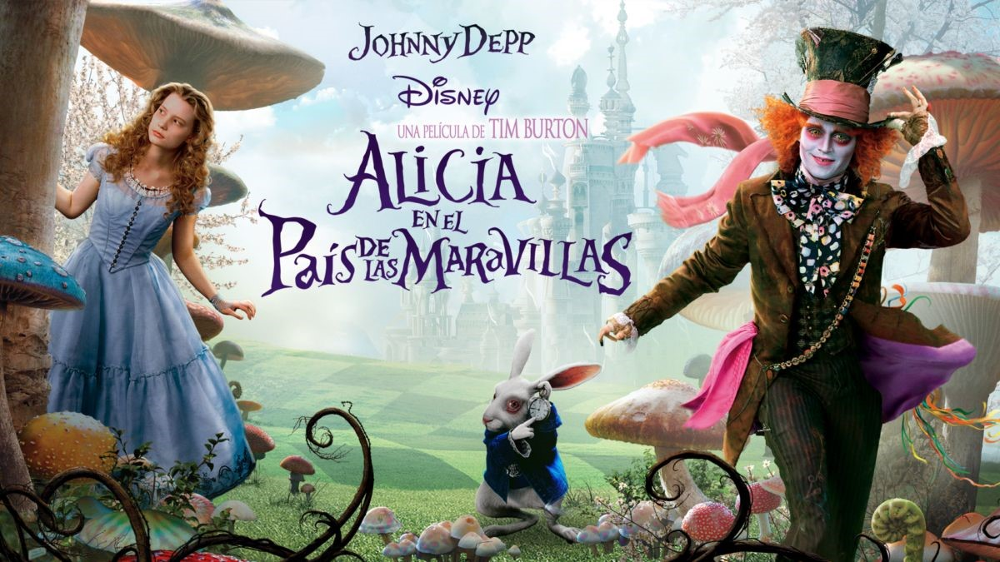

Carro
El carro alegorico es un festival que celebramos en la comunidad de
guadalupe victoria durango cada año, donde participan todas las escuelas
(Secundaria, Preparatoria, y Universidad). Lo que demostramos en cada
carro es una muestra de talento, cariño, disciplina y aprecio por esta
tradicion creada en guadalupe victoria. La forma en la que se realizan
estos hermosos carros es la siguiente, iniciamos por idear una idea
sobre un tema para realizar el dichoso carro de luces. La forma en la
que nosotros realizamos el carro fue la siguiente, nos asignaron un
color con el cual ibamos a decidir una tematica referente al color, en
nuestro caso sleccionamos la tematica referente al color que fue la
siguiente, tuvimos la idea de hacer la temática del carro sobre la
caricatura Alicia en el país de las maravillas, más exactamente sobre la
reina roja o la reina de corazones
